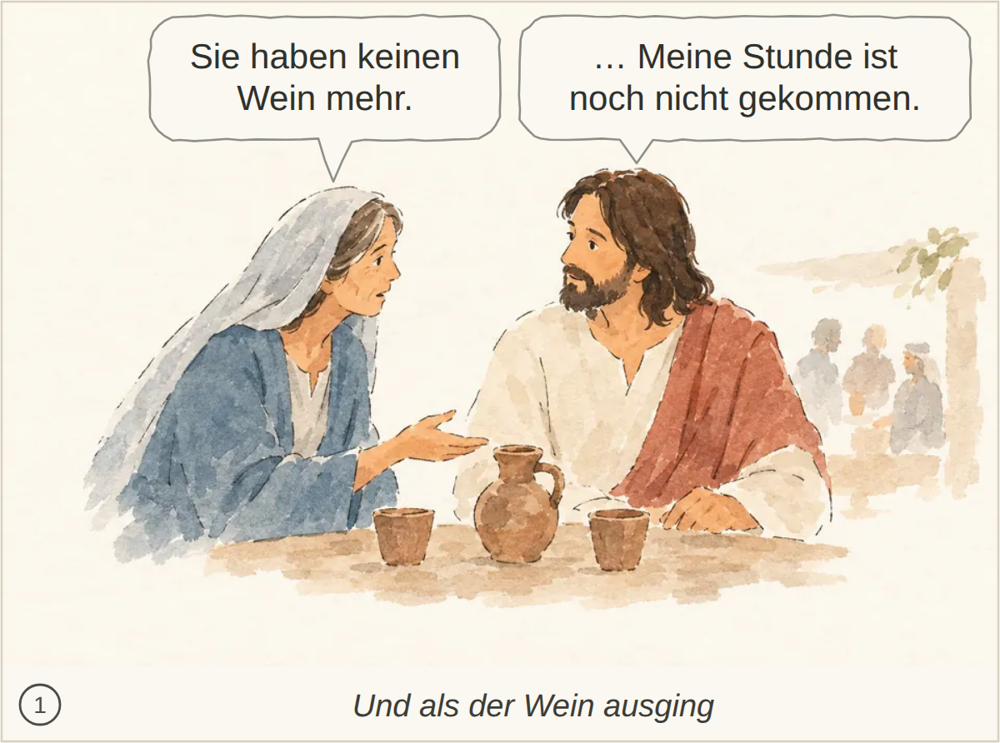
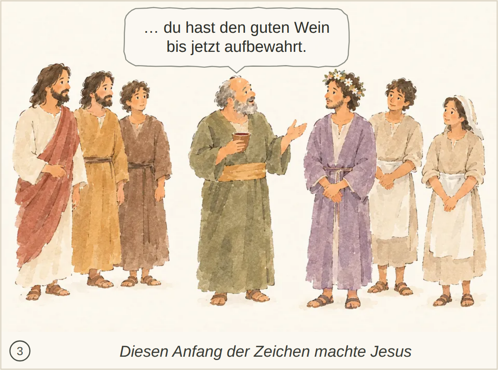
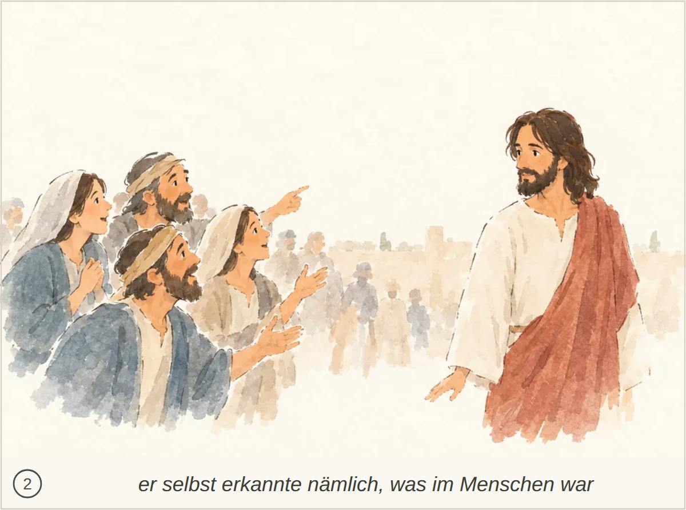
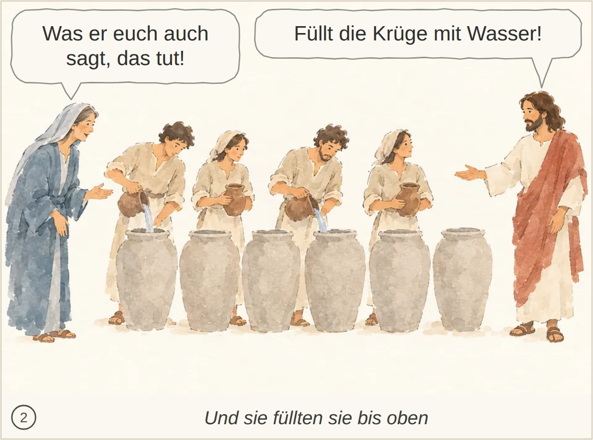
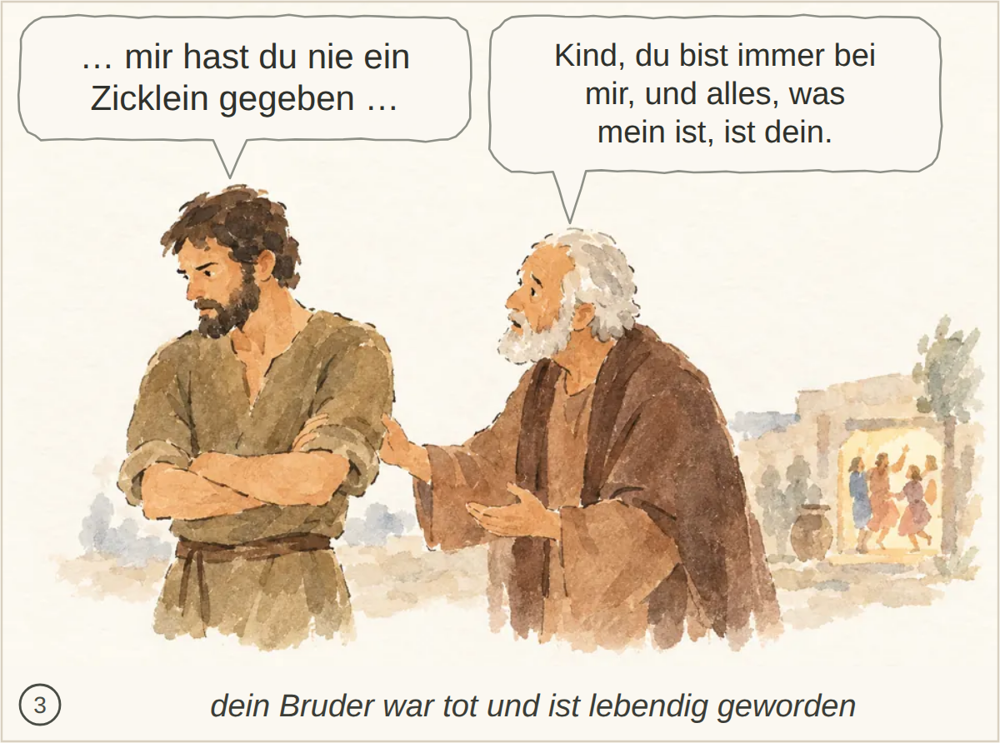

Kachel: bestanden, Kern 2
abgelegtes Bild: bestanden, 5 Punkte, Kern 1 Marias Hinweis auf den fehlenden Wein wird vermutet; Jesu Antwort und der Hinweis auf seine noch nicht gekommene Stunde fehlen.
Blind: The woman gestures toward the man as they sit together at a table, and he looks back at her. Three faint figures are gathered around another table in the background. – Possibly the wedding at Cana, at the moment Mary tells Jesus that the wine has run out. The image does not establish the story or exact moment with certainty.

Kachel: bestanden, Kern 2 Nichts Wesentliches.
abgelegtes Bild: bestanden, 7 Punkte, Kern 2 Das Lob des guten Weins und der Glaube der Jünger werden nicht ausdrücklich genannt.
Blind: The older man holds a cup and gestures toward the man wearing a flower wreath. The others stand nearby, watching or facing the exchange. – Possibly the wedding at Cana: the banquet master addresses the bridegroom after tasting the water turned into wine. The picture does not establish the story or moment conclusively.

Kachel: bestanden, Kern 2
abgelegtes Bild: bestanden, 6 Punkte, Kern 2 Der genaue Ausspruch ist nicht erkennbar.
Blind: A man raises a whip and tips a table, scattering coins. Two men with birdcages recoil, while a bovine and a sheep move away to the right. – Jesus cleansing the Temple, at the moment he drives out the sellers and overturns a money changer's table.
Kachel: bestanden, Kern 2
abgelegtes Bild: bestanden, 5 Punkte, Kern 1 Das Gespräch passt, aber die Frage nach einem Zeichen und Jesu Aussage über den Tempel seines Leibes sind nicht erkennbar.
Blind: Three men face a fourth man in a red-brown drape. One gestures toward him, while he holds a hand to his chest; distant figures stand among the buildings. – The red-draped man may represent Jesus speaking with religious leaders at the temple. The particular story and moment cannot be identified confidently from the image alone.

Kachel: bestanden, Kern 2 Die spätere Erinnerung und der Glaube der Jünger werden nicht erwähnt.
abgelegtes Bild: durchgefallen, 4 Punkte, Kern 1 Die Zeichen als Grund für den Glauben fehlen; ebenso, dass Jesus sich den Menschen nicht anvertraut, weil er ihr Inneres kennt.
Blind: A group of people on the left gesture and look toward the robed man on the right. He turns his head back toward them while other figures stand in the distance. – The robed man may represent Jesus with people calling to or following him, but the picture does not clearly identify a particular Bible story or moment.

Kachel: bestanden, Kern 1 Die Zeichen und Jesu Zurückhaltung, weil er die Menschen und ihr Inneres kennt, sind nicht erkennbar.
abgelegtes Bild: bestanden, 4 Punkte, Kern 1 Das Füllen der Krüge ist dargestellt, aber das Schöpfen und Bringen zum Speisemeister sowie die konkreten Anweisungen sind nicht erkennbar.
Blind: Two people pour liquid from pitchers into large jars while two others hold pitchers nearby. The woman at the left and the bearded man at the right gesture toward the group. – This likely depicts the wedding at Cana, at the moment servants fill the six jars with water before Jesus turns it into wine.

Kachel: bestanden, Kern 1 Jesu Aufforderung, Wasser zu schöpfen und dem Speisemeister zu bringen, fehlt.
abgelegtes Bild: bestanden, 4 Punkte, Kern 1 Passa in Jerusalem, die Zeichen und der daraus entstehende Glaube sind nicht erkennbar; auch Jesu Zurückhaltung und sein Wissen um die Menschen bleiben offen.
Blind: A group on the left looks toward a robed man standing apart on the right. One man in the group points toward him, while the robed man looks back at the group. – The man on the right may represent Jesus with followers or onlookers, but no particular Bible story or moment is clearly identifiable from the picture alone.

Kachel: bestanden, Kern 1 Die Zeichen und der daraus entstehende Glaube sind im Bild nicht klar erkennbar; auch Passa und Jerusalem bleiben unbestimmt. Jesu Zurückhaltung wird nur angedeutet.
abgelegtes Bild: bestanden, 5 Punkte, Kern 2 Nichts Wesentliches.
Blind: A small boat is being tossed by rough waves as several men brace themselves. One man reaches toward a reclining, apparently sleeping man while the others look on. – This likely illustrates Jesus calming the storm, at the moment when the disciples approach or wake him as he sleeps in the boat.

Kachel: bestanden, Kern 2
abgelegtes Bild: bestanden, 5 Punkte, Kern 1 Jesu Befehl an Wind und See sowie das Abflauen des Sturms und die eintretende Stille sind nicht erkennbar.
Blind: One man stands in the boat and extends his hand toward the water. Two others lean forward and watch him as waves rise beside the boat. – Possibly Jesus calming the storm, at the moment he gestures toward the water while the disciples watch. The image does not establish the story with certainty.

Kachel: bestanden, Kern 2 Nichts Wesentliches fehlt.
abgelegtes Bild: bestanden, 3 Punkte, Kern 1 Die Umkehr und der Entschluss, zum Vater zurückzukehren und seine Schuld zu bekennen, fehlen.
Blind: A man sits on the ground beside three pigs eating from a trough. He looks upward while the animals feed. – Possibly the parable of the prodigal son, at the moment when the impoverished son is tending pigs and longing for their food.

Kachel: bestanden, Kern 2 Das ausdrückliche Schuldbekenntnis wird nicht erwähnt.
abgelegtes Bild: bestanden, 4 Punkte, Kern 1 Die Begrüßung ist erkennbar, aber Umarmung und Kuss, das Bekenntnis des Sohnes und die Anordnungen des Vaters werden nicht klar gezeigt.
Blind: The older man holds the younger man by the shoulders as the younger man bows his head. A distant figure walks toward the building carrying a cloth. – This likely illustrates the return of the prodigal son, at the moment his father welcomes him home.

Kachel: bestanden, Kern 1 Der Kuss und die Umarmung sowie Gewand, Ring, Sandalen und das Festmahl fehlen.
abgelegtes Bild: bestanden, 4 Punkte, Kern 2 Nichts Wesentliches; die konkreten Worte des Gesprächs sind bildlich nicht erkennbar.
Blind: The older man touches the younger man's arm and gestures toward him, while the younger man folds his arms and looks away. In the background, several small figures appear to be celebrating or dancing near a doorway. – Likely the parable of the prodigal son: the father comes out to plead with the angry elder son, who refuses to join the celebration of his brother's return.

Kachel: bestanden, Kern 2 Nichts Wesentliches fehlt.
abgelegtes Bild: bestanden, 3 Punkte, Kern 1 Jesu Frage nach Furcht und Glauben sowie das Staunen der Jünger über den Gehorsam von Wind und See bleiben unklar.
Blind: Four men sit together in a boat on calm water. The man on the left gestures toward the others, while one covers his mouth and two lean toward each other. – Possibly Jesus speaking to his disciples in a boat, but the visible details do not establish a particular Bible story or exact moment.

Kachel: bestanden, Kern 2 Nichts Wesentliches fehlt.